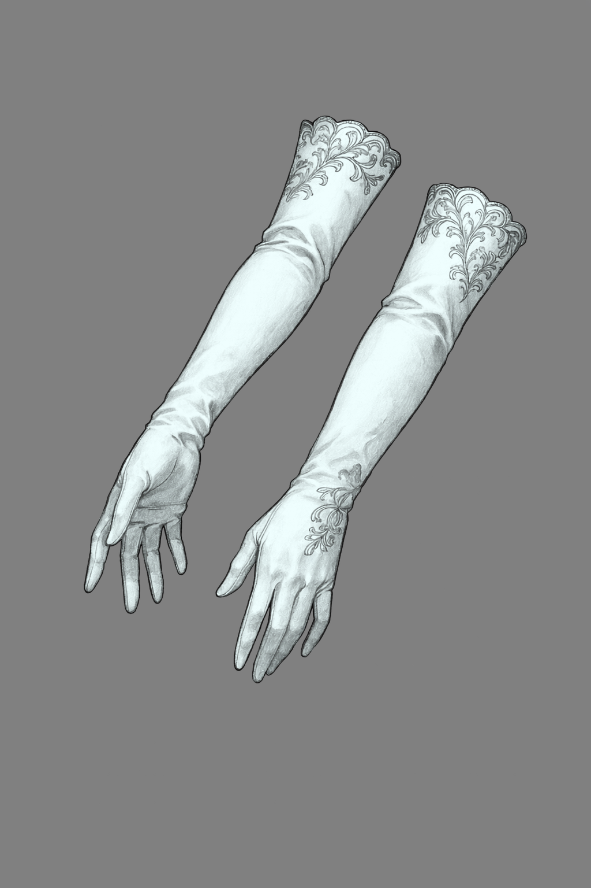

Unbound Gear
Often players and GMs alike think that discarding the family blade, because you found a +1 Longsword is lame and uninteresting. Many decided to make upgreadabe gear systems, espeically for 5th edtition: Constelequaries from Nat19, Fabled items from Kobold Press, or Vestiges from Tal'Dorei by Critical Role, so I thought: "After all, why shouldn't I make one myself", and this article is the Results of that thought.

How I took on this task
Many people before me give these items some elaborate name, but that's not me, so I decided to for once be funcitonal and give them tiers:
| Tier | Description |
|---|---|
| 0 | This item is almost indistinguishable from the mundane, it has yet to regain or gain its power and become a proper magic item despite the seed being already there. |
| 1 | These are the common magic items level, where the abilites are nothing extra, just simple low level magics, that many normal magic items are capable of achieving. |
| 2 | After some kind of evolution, the item gains more potent magical abilites, and sometimes even slivers of personality. At this level items can gain rationality and become unrully, unless properly dealt with - either with a seal or deal. |
| 3 | Here we have the most potent of magical items, that often have a setience of its own and can act on their behalf. To achieve this state there is often a ritual needed and the item chooses its host. Items like these can be walking calamities, that wait to be unleashed upon the world. |
With this system I took inspiration from differnt games as well as Lord of Mysteries book and its sealed artifacts, because I feel it translates well into the TTRPG setting.
Implementation of the mechanic
I believe in the sense of other people actions, so I will not dictate that party of this level should have X items of tier Y, you know your party better than me. These items vary a lot and it is important to take that into consideration, as some Tier 2 items will be more akin to more thame Tier 3 ones. The most important thing here is to make so your players feel the progression - you need to properly space it out and not give out all the advancements over the course of 3 consecutive sessions (unless the story is in the rush).
The step from Tier 0 to Tier 1 should not be something difficult. It should either happen automatically after some time or it should have a clear circumstance under which it happens, as so we don't gatekeep the fun from the players for too long, as they may become frustrated.
Tier 1 to Tier 2 might be more of a challange, as it provides a better reward - a powerful ability or effect. Here is where we begin talking about items that have created legends by themselves. Some may even have personality and could attune themselves to the user if the right conditins are met. At this point the players need to start taking care of the item, as the potency of the energy it holds depends on its relation with the wielder. To advance to this level item my require special circumstances or rituals.
Not all items will have the advancement from Tier 2 to Tier 3, but those that do are the most powerful, world reshaping beings, as calling them pieces of gear would understate their power. They choose their wielder and bring peace or calamity whenever they appear. To advance to this level a complicated and long ritual is needed, but as a reward it gives the players an opportunity to hold almost divine power, and the authority that comes with that.
Example
Tier 0. This item has a slight magical effect of giving a player a true sight of 5 times their proficiency bonus when attuned to.
Tier 1. To advance to this tier once must recconect it with the place of woreship of this Goddess. When that happens they transform slightly gaining a silvery embroilment, that glows the softest silver light in darkness. Now they allow you to use Silver Arrow once per Long Rest.
Silver Arrow. You shoot a blazing silver arrow from the palm of your hand, that damagesand confuses enemies. You roll an Ranged Spell Attack agains an enemy within 60 feet of you. When hit they take 3d10 fire damage that cannot be reduced in any way and must make a DC 17 Constitution Saving or be Sluggish (they can use only one of: action, bonus action or move) until the start of your next turn.
Tier 2. To achieve this level one must slay a being of immense darkness and evil. After that is done, they think of the wielder worthy and attune to them. The gloves lose their physical form and meld into their user's hands, making their hands glow a bright silvery light and having a cold mist surround them. The user may now use the Silver Arrow up to three times per long rest and the True Vision extends to 10 times their proficiency bonus. They also gain ability to use Silver Veil.
Silver Veil. The glove has five charges, which it regains when you complete a Long Rest. When you heal a creature or give it temporary hit points you can expend any number of those charges to add an equal number of d6's to that healing or temporary hit points.
Fun thing I made
Have you ever wanted to have more gacha in your RPG games... me neither, but I made a gacha machine for loot distribution. It was more of: "can I make it?" instead of doing it for some real use, but... after some thinking I came up with an idea of how to introduce it. It works the best for the westmarches style game, but nothing stops you from sending this article to my players and giving them The opportunity of the lifetime.
On the main website and here in the tools section you can see gacha button. There are 2 banners there that give you some random loot any time you roll for it. If you play the more wacky game you may try giving your players a ten-pull on this machine instead of normal reward to spice thing up a little. There are not obstacles in seeing if it works for you, as it costs nothing, as I have just made it for fun to give the rolling for loot some spectacle and suspense.
With the amount of ideas I did not think that it would deserve it's own article so I just drop it here and I'll probably update it once per sometimes, as I want this website to be one stop shop for the fun and wacky TTRPG ideas, with focus on DnD 5e 2014.
Portions of this material reference the D&D 5e System Reference Document by Wizards of the Coast LLC.
The SRD is licensed under the Creative Commons Attribution 4.0 International License .
Original text on this page is © 2026 Exi's Emporium.